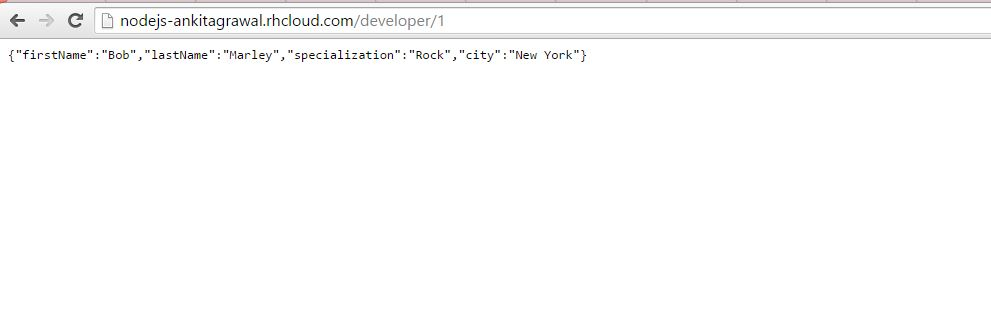

Click here to go to the Node JS Page
Image Screenshot from the Node JS page.
Description : Here Static JSON Object is displayed at particular Index.
Code Snippet :
var express = require('express')
var app = express()
var developer = [
{
Name: "Ankit", LName: "Agrawal", Specialization: "Java", city: "Boston"
},
{ firstName: "Bob", lastName: "Marley", specialization: "Rock", city: "New York" },
]
app.get("/developer", function (req, res) { // get function to get a response from the server
res.json(developer);// send the whole developer array.
});
app.get("/developer/:index", function (req, res) { // to access a particular developer
var idx = req.params['index']; //. notation (req.params.index), fetch the index from the url
res.json(developer[idx]); // send that particular array using the index.
});
var ip = process.env.OPENSHIFT_NODEJS_IP || '127.0.0.1';
var port = process.env.OPENSHIFT_NODEJS_PORT || 3000;
app.listen(port, ip);